Week4
Neural Networks
Nonlinear Hypotheses
Learning algorithm
Supervised learning - logistic regression
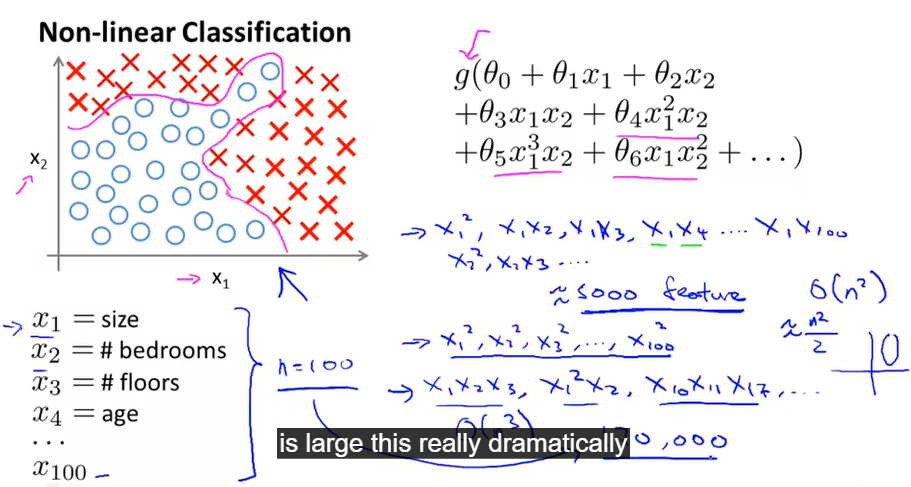
non-linear classification
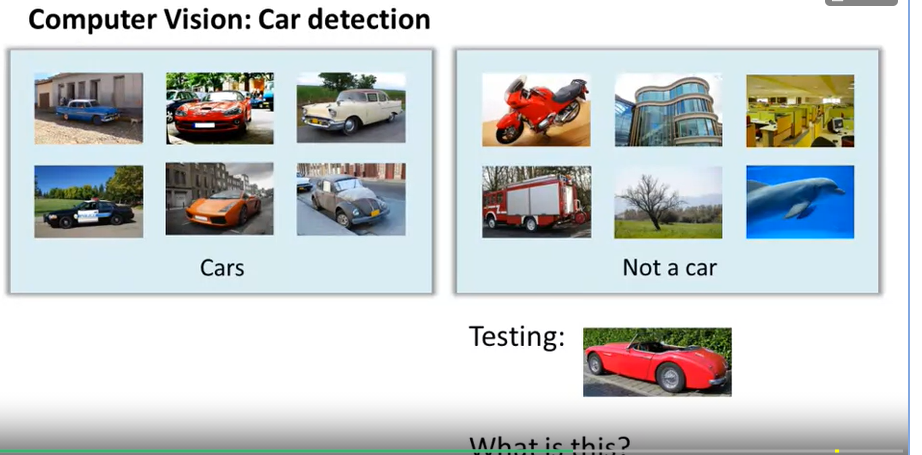

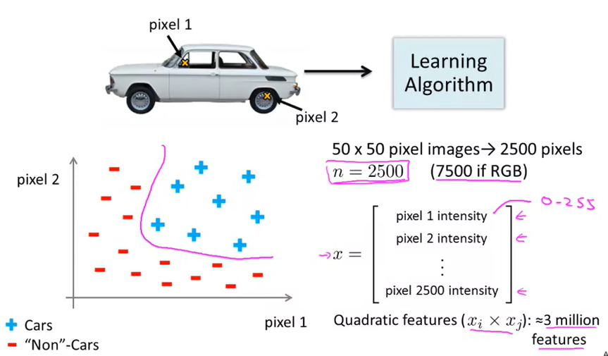
it is too large to solve fast
Neurons and brain
computationally expensive algorithms
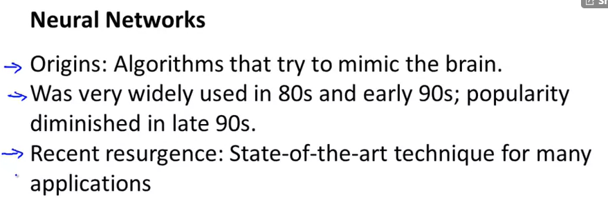
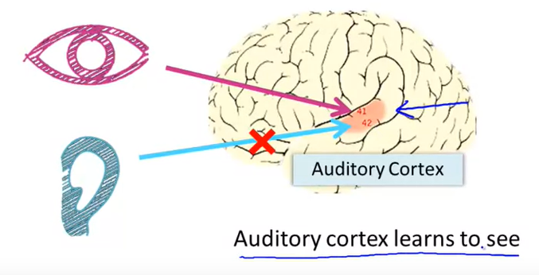
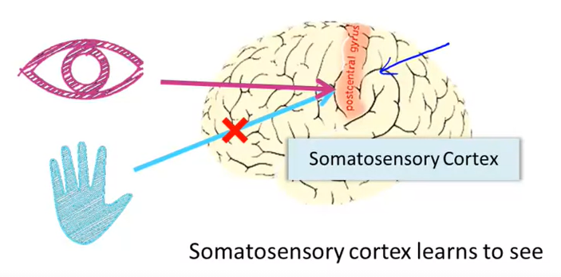
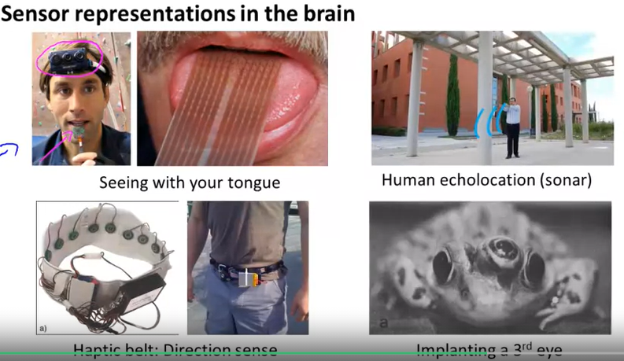
Neural Networks
Model representation I
represent hypotheses or model
neuron model : logistic unit
X0 is bias unit. outputs the value 1
weights: paramenters
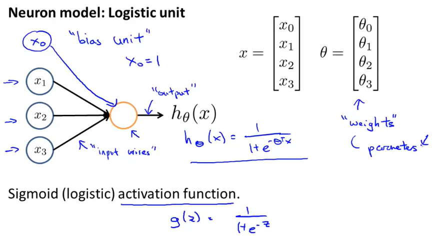
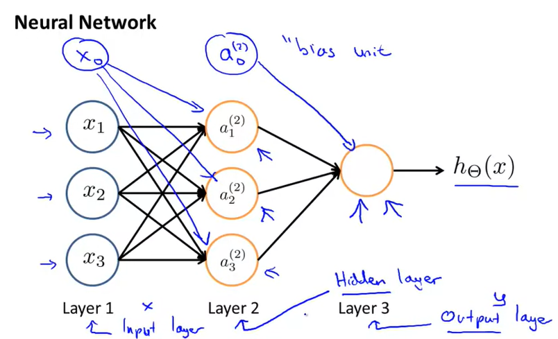
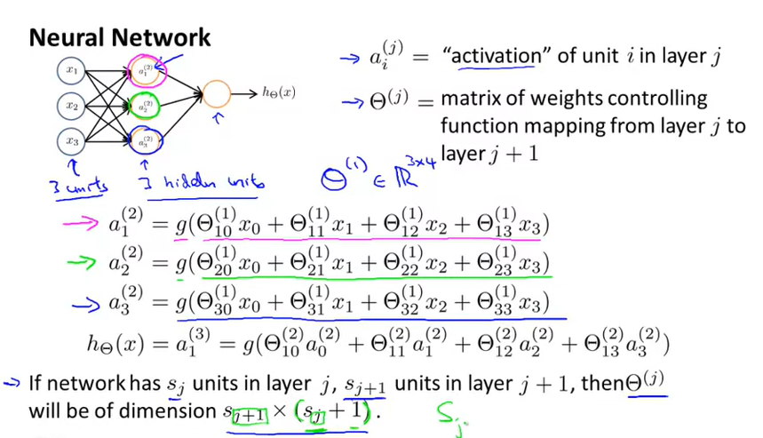
At a very simple level, neurons are basically computational units that take inputs (dendrites) as electrical inputs (called "spikes") that are channeled to outputs (axons). In our model, our dendrites are like the input features x_1\cdots x_nx1⋯xn, and the output is the result of our hypothesis function. In this model our x_0x0 input node is sometimes called the "bias unit." It is always equal to 1. In neural networks, we use the same logistic function as in classification, \frac{1}{1 + e^{-\theta^Tx}}1+e−θTx1, yet we sometimes call it a sigmoid (logistic) activation function. In this situation, our "theta" parameters are sometimes called "weights".
Model representation II
forward propagation : vectorized implementation
linear combination that go into a particular neuron
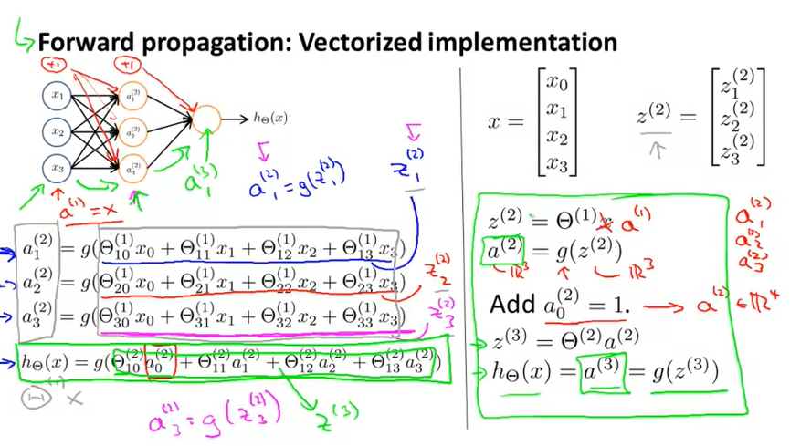
neural networks learning its own features
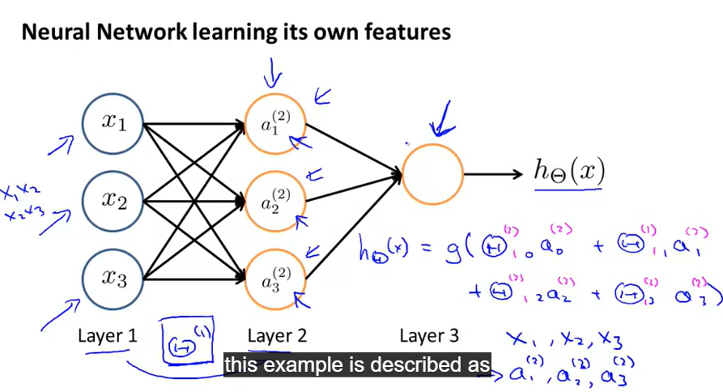
other network architectures
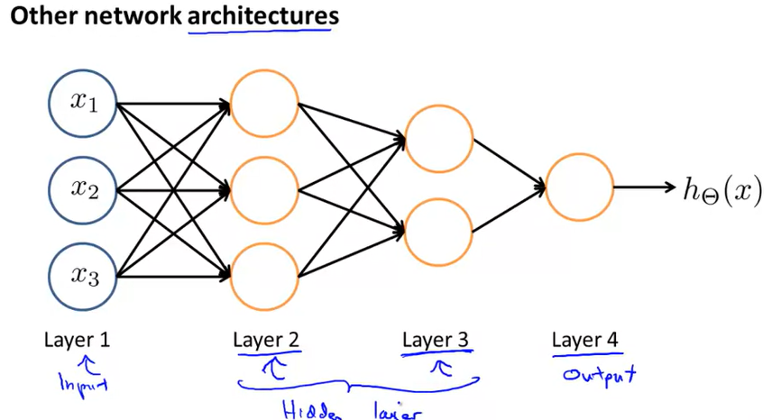
In this section we'll do a vectorized implementation of the above functions. We're going to define a new variable z_k^{(j)}
z
k
(
j
)
that encompasses the parameters inside our g function.
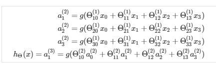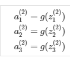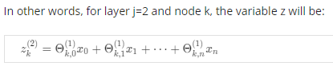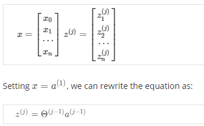
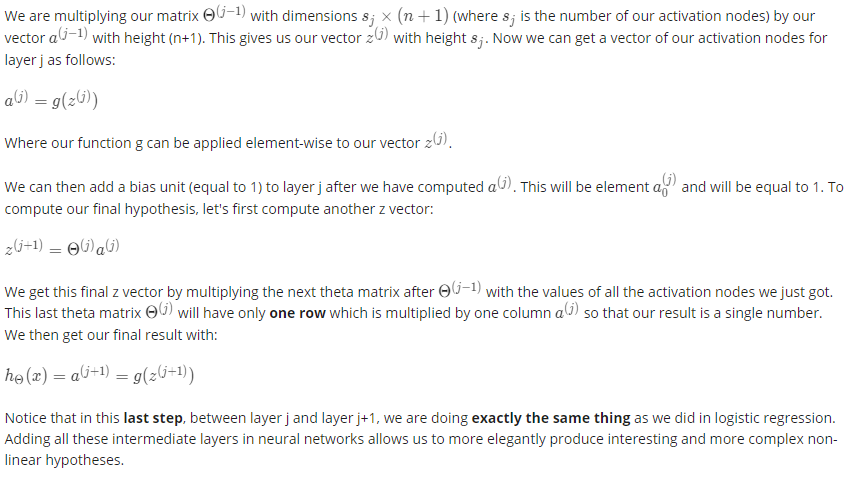
Applications
Examples And intuition I
non-linear decision boundary
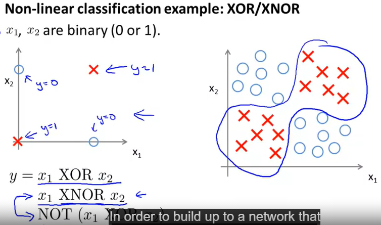

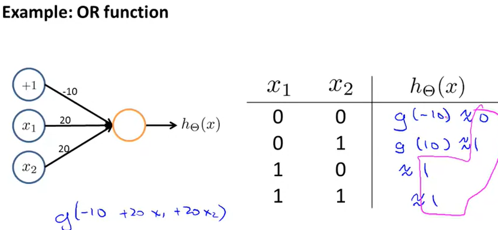
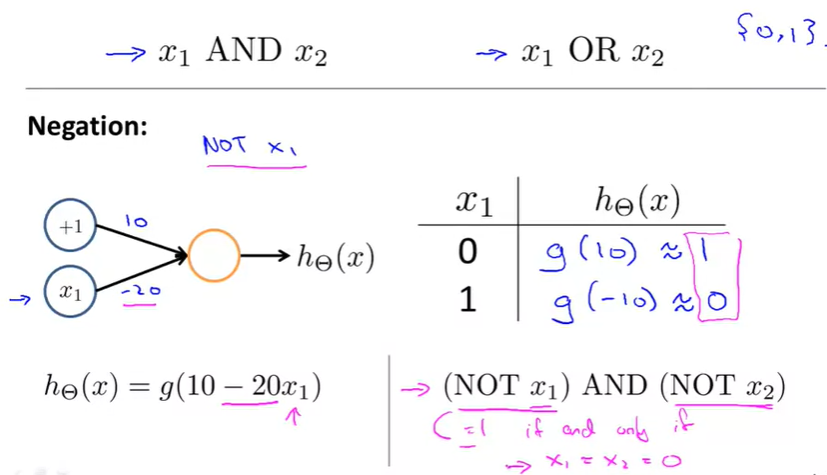
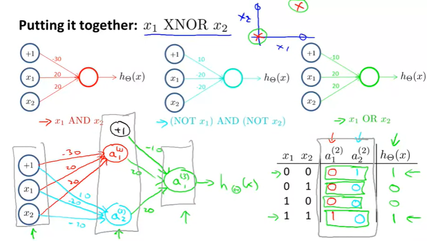
multiclass classification
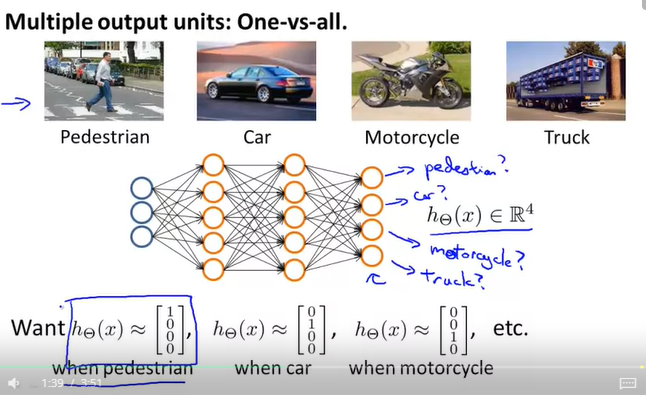
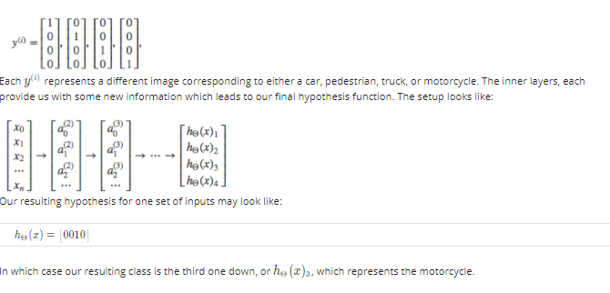